Questionnaire, rebuilt from the logic up.
A configurable pre-visit triage editor that replaces stacked forms — and a real-time experience that makes 4-depth branching logic feel like a natural conversation.
Where this fits.
This is one module within a larger B2B medical booking platform — a system used by 300,000+ annual bookers. The pre-visit questionnaire is the branch that connects the booking form to the actual triage, and where this project lives: turning a rigid, static intake into a responsive, conversational one.
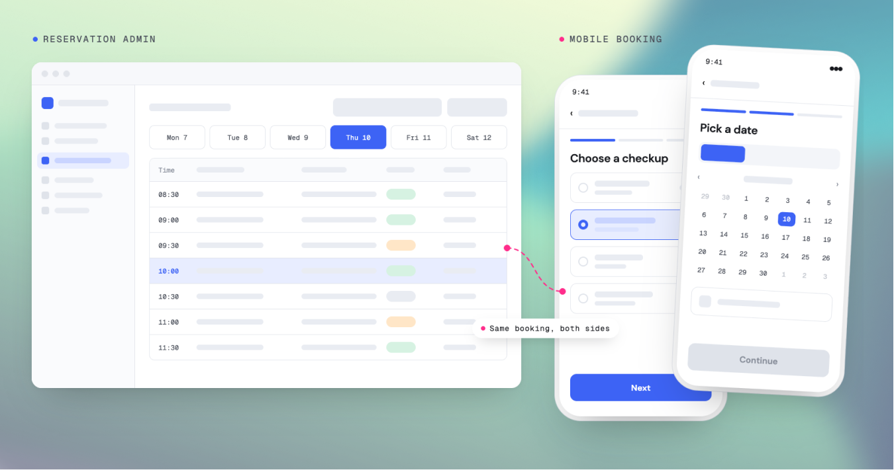
A hardcoded form that couldn't
keep up with the clinic's reality.
The old questionnaire was a single, hardcoded form — one structure for every clinic. When a hospital needed to add a triage question, an engineer had to ship a code change. Operators couldn't adjust anything themselves, and the experience on mobile was a long, undifferentiated scroll. There was no admin tool at all.
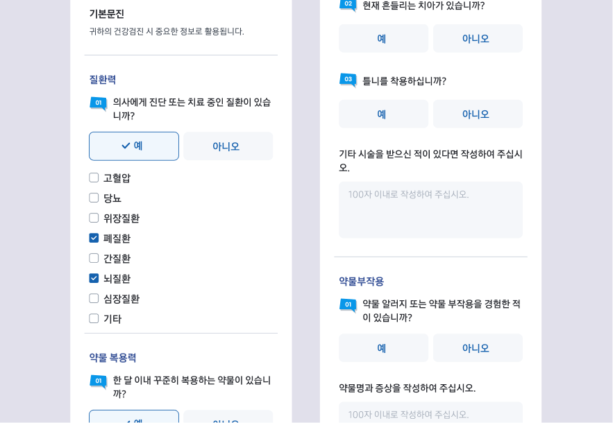
Mobile — the original stacked form
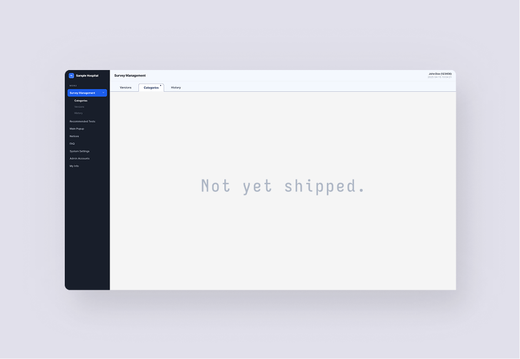
No questionnaire builder
The challenges
Designing for the people
who build the form.
The editor had to render every condition a clinician could set — creating questions, conditional answer routes, and inline queries, all the same time. I had to stay tethered to the existing back-office data model while introducing branching logic that operators could reason about without reading a tree.
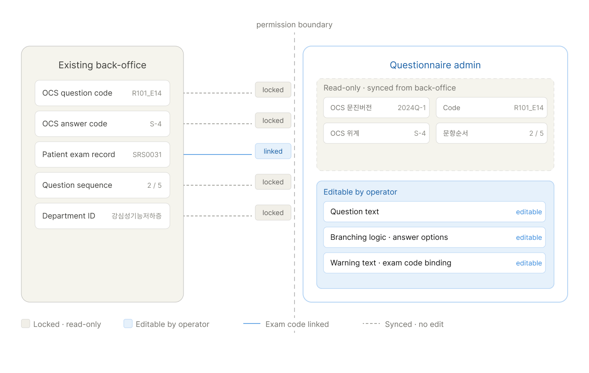
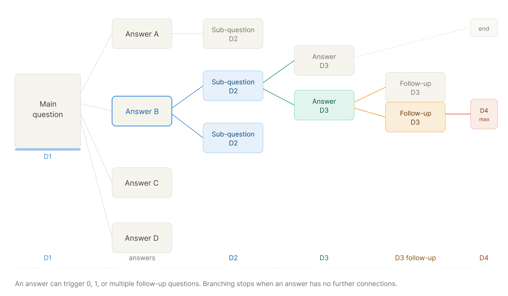
Mapping every way an answer could look
Each answer type — from a simple radio to a nested multi-select with branching logic — had its own edge case and its own state in flow.
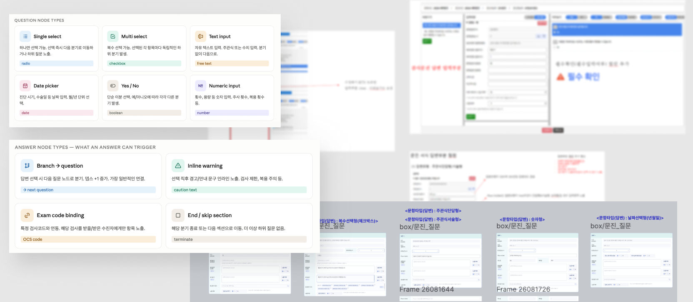
See what you're building,
as you build it.
A live mobile preview sits beside the editor, so operators can see exactly how each change lands for the patient — no publishing, no guesswork.
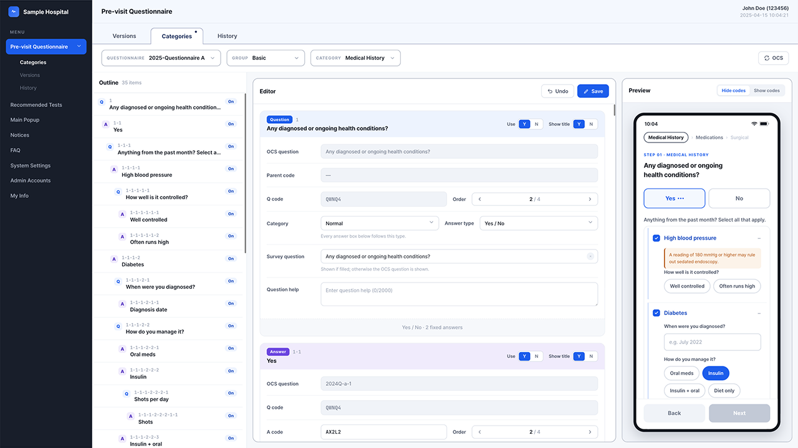
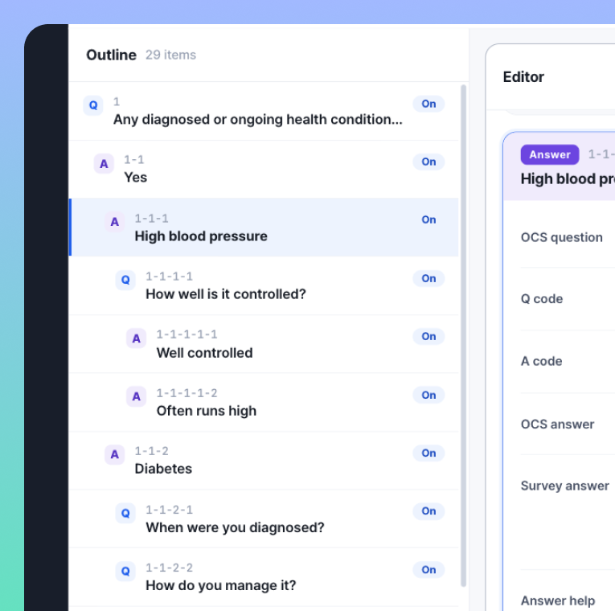
Panel 1The full question hierarchy stays visible at all times — operators never lose track of where they are in the structure.
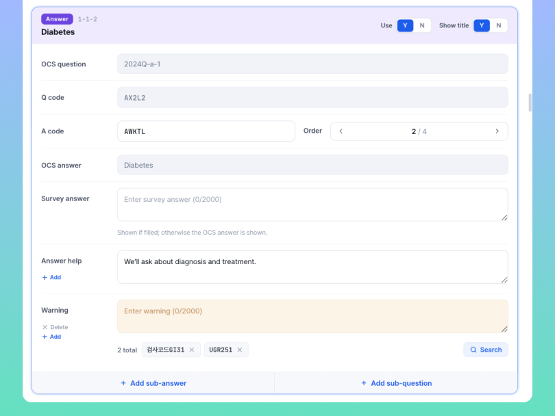
Panel 2OCS codes sync from the back-office and stay locked. On top of that, operators can add warning text, help copy, and exam code bindings — so certain questions only appear for patients scheduled for that test.
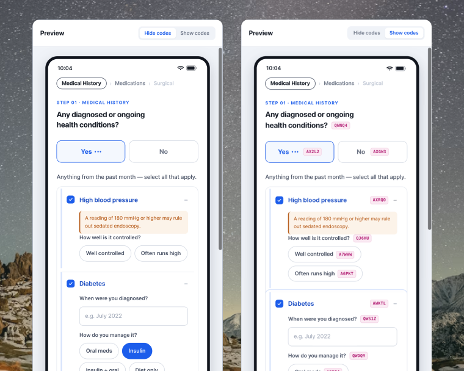
Panel 3A live preview shows operators the exact mobile screen bookers see; with codes on, each question and answer reveals a unique code to trace its mapping.
← scroll to see editor states
Every answer type, one editor
Every question starts by choosing its answer type. Answers always live in their own boxes, so each one carries a code and can open a follow-up. Choice types stack as many boxes as they need; input types turn each box into a text, number or date field with its own rules.
Yes / NoTwo fixed answer boxes. Each keeps its own code and can open a follow-up question.
Single selectAdd as many answer boxes as needed. Patients pick one, and each answer can branch on its own.
Multi selectPatients pick one or more. Warnings, exam codes and follow-ups sit on each answer box.
Text inputSame answer box, with a text field inside. Placeholder and length limit shape what patients write.
Numeric inputOne question can hold several number fields. Each answer box sets its own range and unit.
Date pickerThe answer box sets the format and a date limit, so answers that can't be true never get in.
← scroll to see all answer types
Designing for the people
who fill it out.
Months of branching logic, 4-depth conditions, and conditional queries — none of it matters if the patient can't move through it calmly. The patient's job is simply to answer one question at a time.
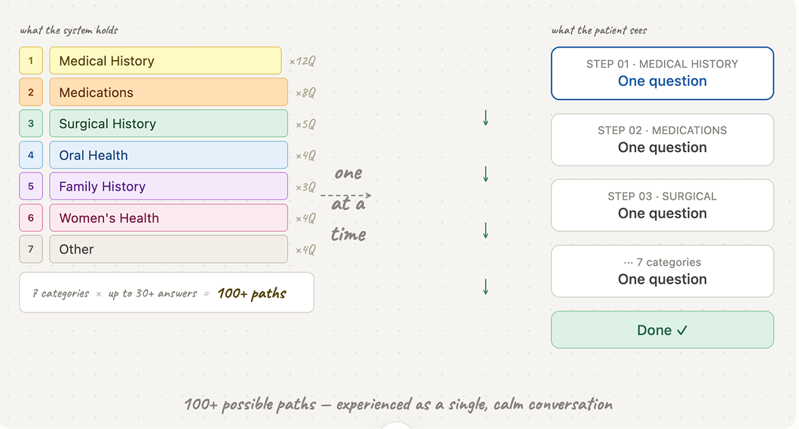
From one long scroll to one question at a time
A single scrolling questionnaire put the full weight of the system on the patient. Splitting into one question per screen reframed the work — each step asks one thing, and the rest stays out of the way.
A clear step count and back-navigation let people move forward without anxiety about how far they had to go, or whether a question routed somewhere unexpected.
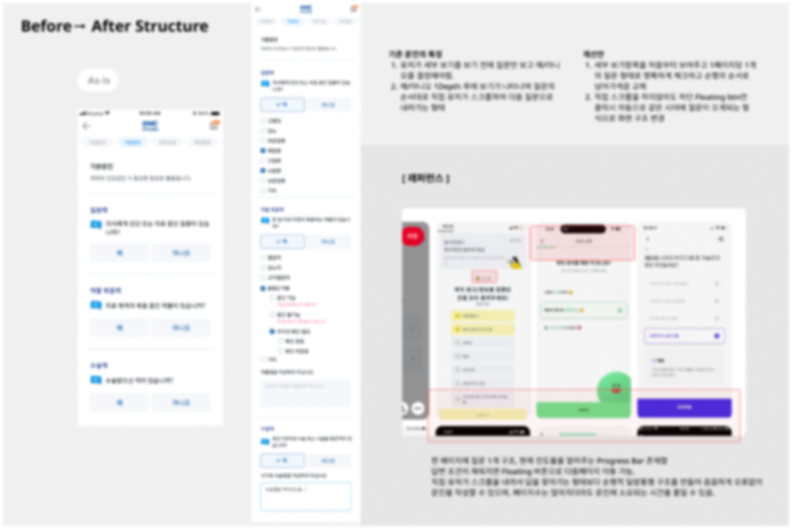
Patients answer step by step — giving operators every piece of information they need, without ever feeling the weight of it.
The questionnaire,
as patients experience it.
Weeks of branching logic, OCS mappings, and conditional warnings — none of it should surface. The patient's job is simply to answer, one question at a time.
Components that adapt to every depth
Each answer type required its own mobile component — designed to expand and nest in place, without a page reload. One implementation pattern that works across all the cases the admin can generate.
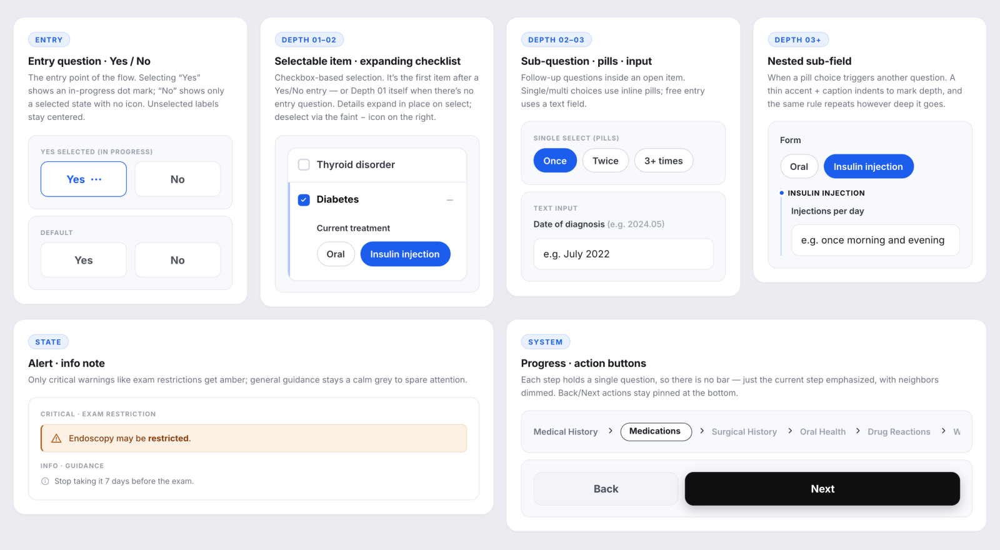
Results
Building logic this complex from scratch — with no reference to lean on — was the real challenge. The admin was entirely requirements-driven; the mobile was about keeping it effortless for patients, then making sure the components synced cleanly with the admin to ease development. As a client project, the exact numbers aren't mine to know — but the system is in active use, and that's enough.
Learnings
Designing something this large — everything syncing in real time, with no gaps — means designing three experiences at once. The admin needs fine-grained control; the booker needs it to feel effortless. The third is easy to forget: the people building it. It took a systematic design system — components developers could actually understand and implement — and leading that handoff was just as much the designer's job here.
Your reaction counts too
If you'd approach this differently, or saw something worth pushing further — I'd welcome the thought.